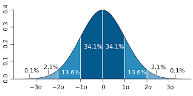
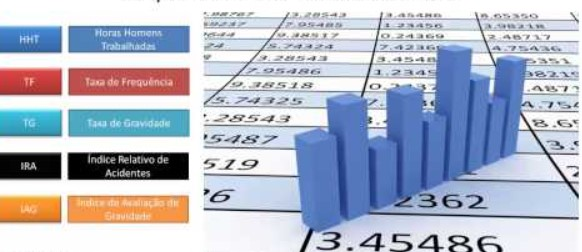

A quantidade de informações a que somos submetidos diariamente era algo impensável há poucas décadas. As influências nesse processo incluem a transformação digital, a formação de blocos econômicos regionais, inovações tecnológicas, que juntas aceleraram e muito o fluxo de dados e informações que circulam pelos meios de comunicação. Diante disso, nunca foi tão oportuno usar mecanismos como a estatística aplicada para ajudar a organizar tudo isso.
Esse cenário, portanto, requer a presença dessa ferramenta tão indispensável para todos que precisam analisar informações antes de tomar decisões diariamente, tanto na vida pessoal quanto no trabalho. Neste post, falaremos sobre estatística aplicada, seu conceito e funções dentro das organizações.

O termo "aplicada" reflete a diversidade de suas aplicações em diferentes áreas, incluindo ciências humanas e sociais. A estatística aplicada é utilizada em diversos contextos, como estudos populacionais, avaliação de efeitos e contraindicações de medicamentos, análise de acidentes de trânsito e desenvolvimento de campanhas de marketing.
Em linhas gerais, é um ramo do conhecimento voltado à coleta, processamento e análise de dados, cujo objetivo é minimizar incertezas, apresentando resultados com a mínima margem de erro possível. Um bom exemplo para ilustrar essa conceituação são as campanhas eleitorais, que utilizam pesquisas de intenção de votos.
A estatística aplicada recebe esse nome pela sua diversidade, como sistema de cálculos, em termos de campo de atuação, incluindo a área de Humanas. Suas inúmeras possibilidades de emprego envolvem estudos sobre a população, efeitos e contraindicações de medicamentos, análises de acidentes de trânsito, campanhas de marketing e uma infinidade de aplicações.

Essa ciência é extremamente útil para que gestores, administradores e empresários comparem grupos de variáveis relacionadas a fim de verificar, resumidamente e de forma simplificada, as mudanças mais relevantes nas áreas relacionadas ao negócio em questão. Por exemplo: preços de produtos acabados, preços de matérias primas, setor financeiro, de marketing, preço final de produtos, controle de qualidade, entre outras.
Além desse tipo de atuação, essa ciência é aplicada em qualquer segmento que exija tomada de decisões, conforme já listamos acima e, quanto mais dados, mais precisas elas costumam se mostrar. Os profissionais da área, então, planejam e coordenam o levantamento de informações por meio de variados instrumentos, que envolvem entrevistas, questionários, formulários e outros.
O trabalho se desenvolve por interpretação dos dados coletados e cruzamento das informações, que podem ser usadas por empresas privadas e órgãos públicos para extração de conclusões mais precisas.
A possibilidade de atuação em áreas diversificadas é uma das características da estatística aplicada que mais atrai profissionais. Alguns exemplos já foram citados anteriormente. Então, a mesma variedade observada no campo de atuação da estatística é válida para os profissionais graduados nesse ramo específico.
Muitos atuam na área de prevenção diagnóstica, nas análises quantitativas setoriais, prevenção de riscos e conformidades e proposição de informações para análise estatística. Além disso, há empresas que contratam estatísticos para compor a equipe de trabalho. Assim, gestores de empresas, profissionais liberais e quaisquer portadores de certificado de ensino superior ou diploma em áreas diversas do conhecimento também podem se especializar nesse segmento e, assim, expandir as possibilidades de mercado.
A atuação da estatística aplicada consegue, ainda, fechar uma lacuna considerável do mercado de trabalho: é o espaço existente entre os segmentos de Gestão de Negócios, Tecnologia da Informação e Engenharia de Processos. Isso é facilmente identificado quando os profissionais se capacitam na gestão de grandes fluxos de dados (Big data), usando ferramentas de estatística e inteligência de negócios a fim de aprimorar as tomadas de decisão de gestão.
Em tempos de Big Data, ciência e tecnologia, essa carreira surgiu como alternativa para proporcionar inteligência de mercado às instituições privadas e públicas. Desde a atuação na indústria à pesquisa, passando pelo setor financeiro, e bioestatística, esses profissionais são desafiados a filtrar informações sobre análise de riscos, novos produtos, cálculo de preços, comportamento do consumidor e muitos outros dados.
Como podemos observar, para qualquer profissional do ramo empresarial, hoje o raciocínio estatístico é tão importante quanto as habilidades de gestão. Tendo em vista a evolução da forma de comunicação e do fluxo de dados disponíveis, é preciso saber interpretar e filtrar as informações e essas novas necessidades podem contar com as vantagens proporcionadas pela aplicação da estatística para:
Depois de entender melhor a importância da estatística aplicada aos negócios e às diversas áreas de conhecimento, é interessante conhecer cursos que possam ajudar a colocar essa ciência em prática da melhor maneira.
Então, para ajudar você a se qualificar, a certificação Black Belt da metodologia Six Sigma da EDTI pode significar um grande benefício em sua carreira profissional nessa área. O reconhecimento juntamente com as habilidades que compõem esse nível de treinamento poderão ajudá-lo a alcançar inúmeras conquistas em altos postos de gestão na empresa. Isso permitirá que muitas portas se abram no mercado de trabalho, fazendo de você um profissional requisitado e respeitado.